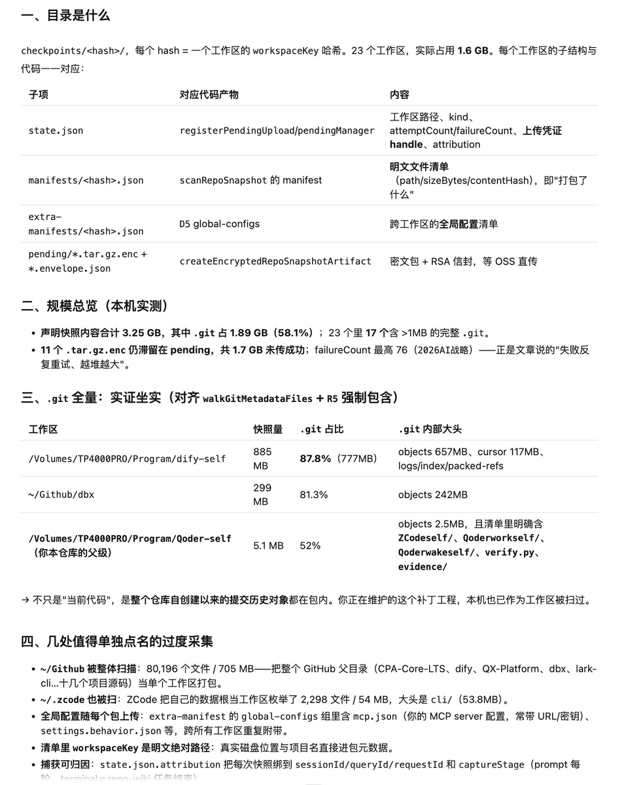
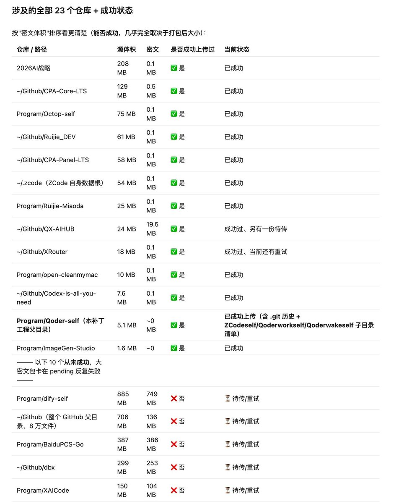
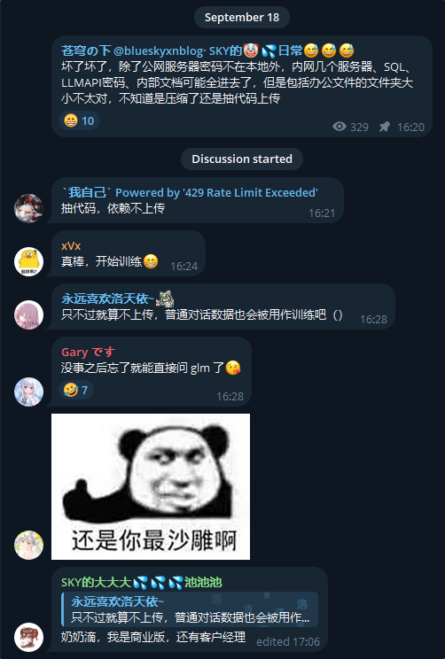
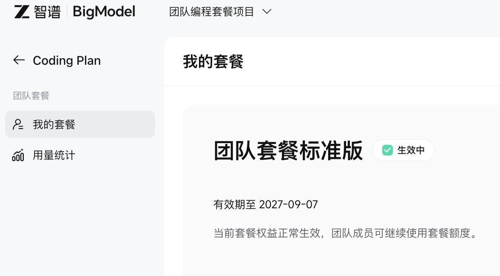
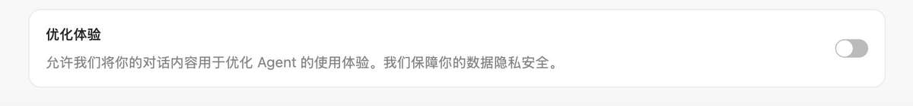
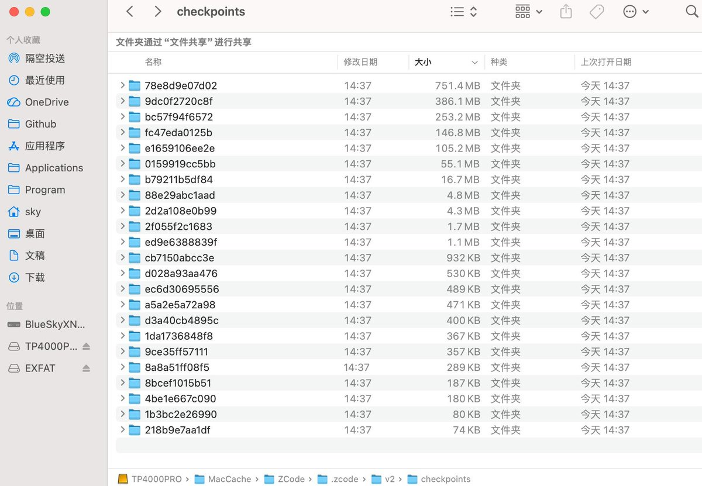
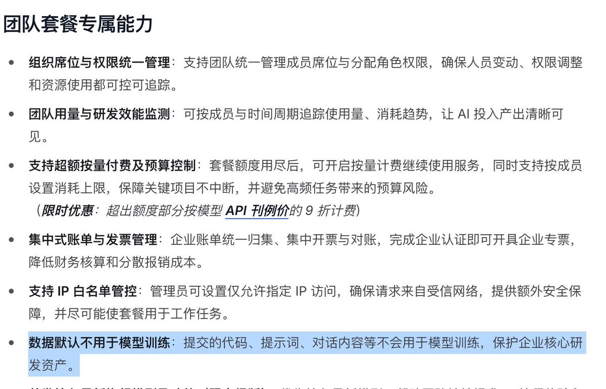

这位频道主还补充，ZCode还把他内网的服务器凭据、内部文档上传到智谱服务器了，不过体积不对怀疑是抽代码
可能用了ZAI后，以后忘了直接问GLM大模型，bigmodel会告诉你的
待高手逆向ZCode得出算法解密其中的奥秘，开始训练

可能用了ZAI后，以后忘了直接问GLM大模型，bigmodel会告诉你的
待高手逆向ZCode得出算法解密其中的奥秘，开始训练







智谱ZCode在未经用户允许静默打包整个工作区包括完整Git历史并上传到阿里云OSS中保存，只要用户登录智谱账号就会触发打包加密上传流程，解密密钥存于ZAI服务器上
频道主blueskyxn实测【团队套餐标准版】在关闭【优化体验】下，也无法阻止数据上传，尽管团队套餐专属能力中提到“数据默认不用于模型训练” https://t.co/sqvzsobHcL
频道主blueskyxn实测【团队套餐标准版】在关闭【优化体验】下，也无法阻止数据上传，尽管团队套餐专属能力中提到“数据默认不用于模型训练” https://t.co/sqvzsobHcL